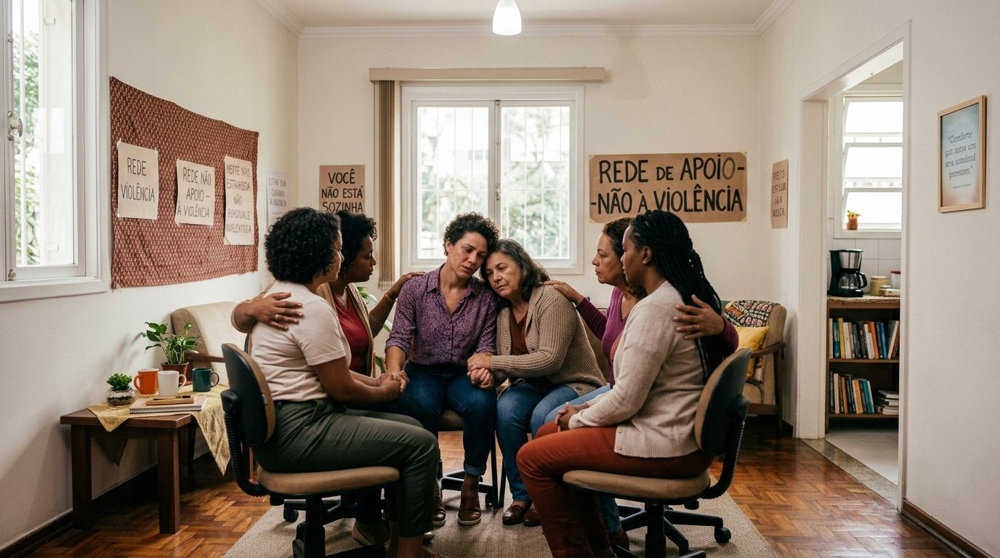
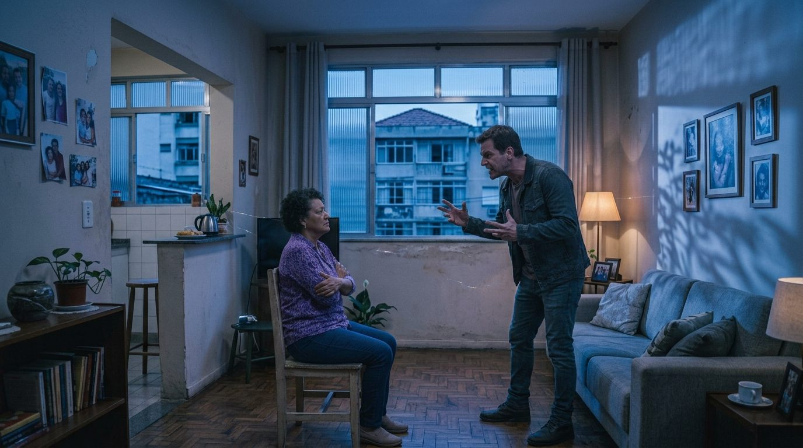
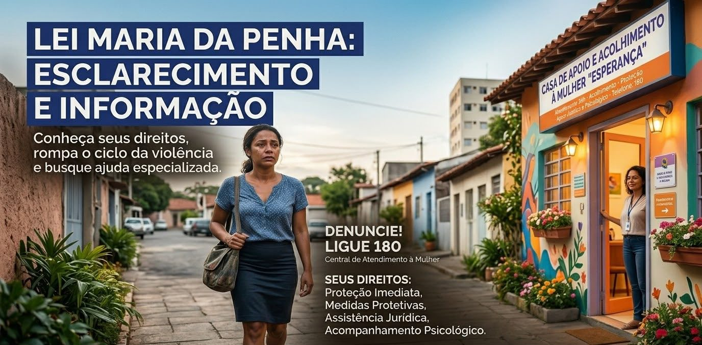
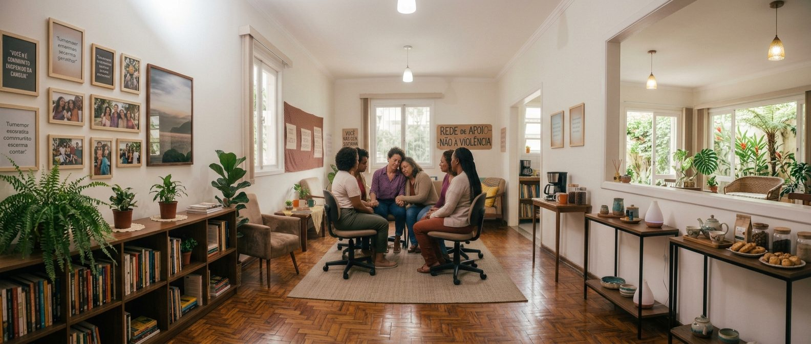

Você não está sozinha.
Acolhimento, orientação e resposta rápida para mulheres em situação de violência. Informação segura, sem cadastro e sem julgamentos.
Uma porta de entrada segura para pedir ajuda
A plataforma reúne, em um só lugar, informação, escuta e caminhos de ajuda para mulheres em situação de violência doméstica. A orientação inicial não exige cadastro; a conta é opcional e serve apenas para o que precisa ser guardado com proteção.
- Segurança primeiroPerigo imediato sempre vem antes de qualquer etapa.
- Anonimato como padrãoSem login para orientação e sem registrar dados pessoais em logs.
- Autonomia da mulherOferecemos caminhos, nunca ordens. A decisão é sempre dela.
- Saída rápidaUm toque leva a um site neutro e substitui esta página no histórico.

Conhecer para reconhecer
A Lei Maria da Penha (Lei nº 11.340/2006, art. 7º) reconhece cinco formas de violência. A violência vicária, que usa pessoas queridas para atingir a mulher, também precisa ser nomeada. Escolha um tipo para saber mais.
Uma mesma situação pode envolver mais de uma forma de violência. Reconhecer o que está acontecendo não é culpa de ninguém.

Quando acender o alerta
Medo constante
Medo de contrariar o parceiro, sensação de culpa e perda de confiança em si mesma.
Isolamento
Afastamento de família e amigos, controle de roupas, redes sociais e amizades.
Controle do dinheiro
Sem acesso ao próprio salário ou cartão; documentos sempre com outra pessoa.
Marcas e desculpas
Lesões frequentes com explicações vagas. Lesões podem ser registradas em exame de corpo de delito.
A lei garante proteção
Proteção imediata
Em risco, a polícia (190) deve atender e proteger.
Medidas protetivas
Podem afastar o agressor e incluir os filhos. O pedido pode ser feito na delegacia ou na Defensoria.
Assistência jurídica
A Defensoria Pública orienta gratuitamente sobre guarda, pensão e separação.
Apoio psicológico
Centros de referência (CRAM/CREAS) oferecem acolhimento e acompanhamento.

M.A.R.I.A.
Módulo de Acolhimento, Respeito e Informação à Assistida, uma homenagem à Lei Maria da Penha. A M.A.R.I.A. escuta, ajuda a mulher a entender o que está vivendo e mostra caminhos de ajuda, sempre no tempo e do jeito dela.
Acolher antes de orientar
Uma pergunta por vez, sempre com permissão para mudar de assunto.
Não revitimizar
Não pede provas, não duvida do relato, não exige detalhes.
Protocolo de emergência
Sinais de risco desviam a conversa direto para 190 e 180.
Nunca inventar
Telefones e serviços só aparecem se forem confirmados.
Demonstração com respostas fixas, criada a partir do roteiro da equipe do chatbot. Não substitui atendimento psicológico, jurídico, policial ou médico. Em risco, ligue 190.
Back-end seguro, público e anônimo
A arquitetura separa a descoberta pública (guias, sinais de alerta, busca de serviços) dos dados protegidos, que só existem se a usuária escolher criar uma conta.
Acesso sem barreiras
Guias, autoavaliação e busca de serviços sem cadastro ou login.
Busca por proximidade
PostGIS encontra delegacias da mulher, CREAS e Defensoria por raio ou CEP, sem guardar o endereço.
Conta opcional
Só para contatos de confiança, diário de evidências cifrado e alertas consentidos.
Privacidade por concepção
Sem IP nos logs, relatos cifrados, localização aproximada nos alertas e saída rápida.
Testar a API ao vivo
Busque serviços de apoio pelo CEP. O CEP é usado só nesta consulta e não é guardado.
Material visual do projeto
Série fotográfica criada para a Rede de Apoio, em diferentes formatos e enquadramentos para cada uso: capa, retrato, paisagem e campanha. Clique para ampliar.

Imagens: Solange Maria Morais e Julia Maria Morais Cardoso (frente de Imagens).
Serviços gratuitos de atendimento
Central de Atendimento à Mulher
Orientação e denúncia. Gratuito, sigiloso, 24 horas.
Polícia Militar
Emergência e risco imediato.
SAMU
Atendimento médico de urgência.
Disque Direitos Humanos
Quando há risco para crianças e outras pessoas.
CVV
Apoio emocional, 24 horas.
Na sua região
Delegacia da Mulher (DDM), Defensoria Pública, CRAM/CREAS, Casa da Mulher Brasileira e Conselho Tutelar.
Trabalhos dos alunos
Cada entrega da turma em um só lugar. Os arquivos ficam na pasta de cada aluno, ao lado deste site.
Quem desenvolve a plataforma
Seis frentes de trabalho, com orientação do Prof. Álvaro Machado Júnior.